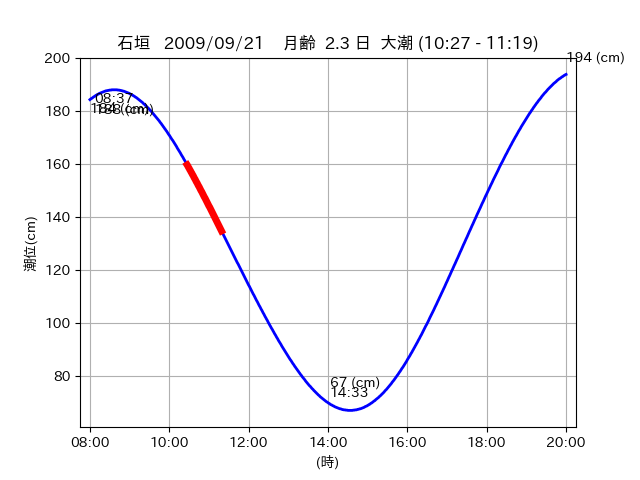
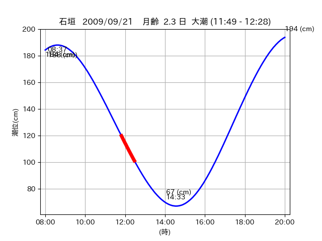
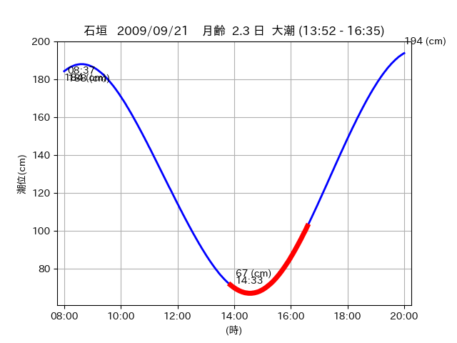

<!DOCTYPE html>
<html>
<head>
    
    <meta http-equiv="content-type" content="text/html; charset=UTF-8" />
    
        <script>
            L_NO_TOUCH = false;
            L_DISABLE_3D = false;
        </script>
    
    <style>html, body {width: 100%;height: 100%;margin: 0;padding: 0;}</style>
    <style>#map {position:absolute;top:0;bottom:0;right:0;left:0;}</style>
    <script src="https://cdn.jsdelivr.net/npm/leaflet@1.9.3/dist/leaflet.js"></script>
    <script src="https://code.jquery.com/jquery-3.7.1.min.js"></script>
    <script src="https://cdn.jsdelivr.net/npm/bootstrap@5.2.2/dist/js/bootstrap.bundle.min.js"></script>
    <script src="https://cdnjs.cloudflare.com/ajax/libs/Leaflet.awesome-markers/2.0.2/leaflet.awesome-markers.js"></script>
    <link rel="stylesheet" href="https://cdn.jsdelivr.net/npm/leaflet@1.9.3/dist/leaflet.css"/>
    <link rel="stylesheet" href="https://cdn.jsdelivr.net/npm/bootstrap@5.2.2/dist/css/bootstrap.min.css"/>
    <link rel="stylesheet" href="https://netdna.bootstrapcdn.com/bootstrap/3.0.0/css/bootstrap-glyphicons.css"/>
    <link rel="stylesheet" href="https://cdn.jsdelivr.net/npm/@fortawesome/fontawesome-free@6.2.0/css/all.min.css"/>
    <link rel="stylesheet" href="https://cdnjs.cloudflare.com/ajax/libs/Leaflet.awesome-markers/2.0.2/leaflet.awesome-markers.css"/>
    <link rel="stylesheet" href="https://cdn.jsdelivr.net/gh/python-visualization/folium/folium/templates/leaflet.awesome.rotate.min.css"/>
    
            <meta name="viewport" content="width=device-width,
                initial-scale=1.0, maximum-scale=1.0, user-scalable=no" />
            <style>
                #map_18718c7391ac4d2c7986454b984bde4b {
                    position: relative;
                    width: 2048.0px;
                    height: 1600.0px;
                    left: 0.0%;
                    top: 0.0%;
                }
                .leaflet-container { font-size: 1rem; }
            </style>
        
</head>
<body>
    
    
            <div class="folium-map" id="map_18718c7391ac4d2c7986454b984bde4b" ></div>
        
</body>
<script>
    
    
            var map_18718c7391ac4d2c7986454b984bde4b = L.map(
                "map_18718c7391ac4d2c7986454b984bde4b",
                {
                    center: [24.054, 123.744],
                    crs: L.CRS.EPSG3857,
                    ...{
  "zoom": 12,
  "zoomControl": true,
  "preferCanvas": false,
}

                }
            );

            

        
    
            var tile_layer_a1907ce250f52f553c4d1676fed9a435 = L.tileLayer(
                "https://cyberjapandata.gsi.go.jp/xyz/seamlessphoto/{z}/{x}/{y}.jpg",
                {
  "minZoom": 0,
  "maxZoom": 18,
  "maxNativeZoom": 18,
  "noWrap": false,
  "attribution": "\u5730\u7406\u9662\u5730\u56f3",
  "subdomains": "abc",
  "detectRetina": false,
  "tms": false,
  "opacity": 1,
}

            );
        
    
            tile_layer_a1907ce250f52f553c4d1676fed9a435.addTo(map_18718c7391ac4d2c7986454b984bde4b);
        
    
            var marker_e20d620af1e4163b651e3659858814c3 = L.marker(
                [24.0481, 123.8045],
                {
}
            ).addTo(map_18718c7391ac4d2c7986454b984bde4b);
        
    
            var icon_ee809a92f9e7f9bab4ba73079752a5a6 = L.AwesomeMarkers.icon(
                {
  "markerColor": "orange",
  "iconColor": "white",
  "icon": "info-sign",
  "prefix": "glyphicon",
  "extraClasses": "fa-rotate-0",
}
            );
        
    
        var popup_6e98fb941eec4fdd956e6ec25e9adf2c = L.popup({
  "maxWidth": "100%",
});

        
            
                var html_a7a2a1479aa43d6404944339d75a6867 = $(`<div id="html_a7a2a1479aa43d6404944339d75a6867" style="width: 100.0%; height: 100.0%;"><table><tr><td></td></tr><tr><td><center>20090921 No.1 </center></table></td></tr></table</div>`)[0];
                popup_6e98fb941eec4fdd956e6ec25e9adf2c.setContent(html_a7a2a1479aa43d6404944339d75a6867);
            
        

        marker_e20d620af1e4163b651e3659858814c3.bindPopup(popup_6e98fb941eec4fdd956e6ec25e9adf2c)
        ;

        
    
    
                marker_e20d620af1e4163b651e3659858814c3.setIcon(icon_ee809a92f9e7f9bab4ba73079752a5a6);
            
    
            var poly_line_0242eebb2969465b835d67aa309a4eb3 = L.polyline(
                [[24.0481, 123.8045], [24.0455, 123.7968]],
                {"bubblingMouseEvents": true, "color": "#00FFFF", "dashArray": null, "dashOffset": null, "fill": false, "fillColor": "#00FFFF", "fillOpacity": 0.2, "fillRule": "evenodd", "lineCap": "round", "lineJoin": "round", "noClip": false, "opacity": 1.0, "smoothFactor": 1.0, "stroke": true, "weight": 3}
            ).addTo(map_18718c7391ac4d2c7986454b984bde4b);
        
    
            var marker_53a9b352ba735a660a592545b0170368 = L.marker(
                [24.0465, 123.7506],
                {
}
            ).addTo(map_18718c7391ac4d2c7986454b984bde4b);
        
    
            var icon_f9f8716e483acc1184181d5815730270 = L.AwesomeMarkers.icon(
                {
  "markerColor": "orange",
  "iconColor": "white",
  "icon": "info-sign",
  "prefix": "glyphicon",
  "extraClasses": "fa-rotate-0",
}
            );
        
    
        var popup_cba648dc394471a50d249b00982bc11a = L.popup({
  "maxWidth": "100%",
});

        
            
                var html_c0f1234b770843749c2a651da71a1e04 = $(`<div id="html_c0f1234b770843749c2a651da71a1e04" style="width: 100.0%; height: 100.0%;"><table><tr><td></td></tr><tr><td><center>20090921 No.2 </center></table></td></tr></table</div>`)[0];
                popup_cba648dc394471a50d249b00982bc11a.setContent(html_c0f1234b770843749c2a651da71a1e04);
            
        

        marker_53a9b352ba735a660a592545b0170368.bindPopup(popup_cba648dc394471a50d249b00982bc11a)
        ;

        
    
    
                marker_53a9b352ba735a660a592545b0170368.setIcon(icon_f9f8716e483acc1184181d5815730270);
            
    
            var poly_line_6987b6d03075dfbc59a8fb63ca0ac6ef = L.polyline(
                [[24.0465, 123.7506], [24.0451, 123.7536]],
                {"bubblingMouseEvents": true, "color": "#00FFFF", "dashArray": null, "dashOffset": null, "fill": false, "fillColor": "#00FFFF", "fillOpacity": 0.2, "fillRule": "evenodd", "lineCap": "round", "lineJoin": "round", "noClip": false, "opacity": 1.0, "smoothFactor": 1.0, "stroke": true, "weight": 3}
            ).addTo(map_18718c7391ac4d2c7986454b984bde4b);
        
    
            var marker_9ce65db3b745e45770641e738d9fb554 = L.marker(
                [24.0572, 123.7366],
                {
}
            ).addTo(map_18718c7391ac4d2c7986454b984bde4b);
        
    
            var icon_f42b6f8e0f390175c636c31494ab95de = L.AwesomeMarkers.icon(
                {
  "markerColor": "orange",
  "iconColor": "white",
  "icon": "info-sign",
  "prefix": "glyphicon",
  "extraClasses": "fa-rotate-0",
}
            );
        
    
        var popup_4206e2b63938d87225752592e402ff2a = L.popup({
  "maxWidth": "100%",
});

        
            
                var html_809d9dc24fd73232244d127adcad1582 = $(`<div id="html_809d9dc24fd73232244d127adcad1582" style="width: 100.0%; height: 100.0%;"><table><tr><td></td></tr><tr><td><center>20090921 No.3 </center></table></td></tr></table</div>`)[0];
                popup_4206e2b63938d87225752592e402ff2a.setContent(html_809d9dc24fd73232244d127adcad1582);
            
        

        marker_9ce65db3b745e45770641e738d9fb554.bindPopup(popup_4206e2b63938d87225752592e402ff2a)
        ;

        
    
    
                marker_9ce65db3b745e45770641e738d9fb554.setIcon(icon_f42b6f8e0f390175c636c31494ab95de);
            
    
            var poly_line_edb2b7f6c9b1895f7195fd6399b45e09 = L.polyline(
                [[24.0572, 123.7366], [24.0502, 123.7524]],
                {"bubblingMouseEvents": true, "color": "#00FFFF", "dashArray": null, "dashOffset": null, "fill": false, "fillColor": "#00FFFF", "fillOpacity": 0.2, "fillRule": "evenodd", "lineCap": "round", "lineJoin": "round", "noClip": false, "opacity": 1.0, "smoothFactor": 1.0, "stroke": true, "weight": 3}
            ).addTo(map_18718c7391ac4d2c7986454b984bde4b);
        
</script>
</html>